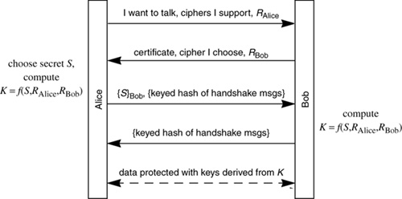

Networking Security Networking Security Networking Security Security Networking Security Networking Security Networking Charlie Kaufman Radia Perlman Mike Speciner Prentice Hall Network Security: Private Communication in a Public World, Second Edition Networking Security Networking Security Networking Security Security Networking Security Networking Security Networking Charlie Kaufman Radia Perlman Mike Speciner Prentice Hall Network Security: Private Communication in a Public World, Second Edition
19.4. SSL/TLS Basic Protocol
Using the reliable octet stream service provided by TCP, SSL/TLS partitions this octet stream into records, with headers and cryptographic protection, to provide a reliable, encrypted, and integrity-protected stream of octets to the application. There are four types of records: user data, handshake messages, alerts (error messages or notification of connection closure), and change cipher spec (which should be a handshake message, but they chose to make it a separate record type).
In the basic protocol the client (Alice) initiates contact with the server (Bob). Then Bob sends Alice his certificate. Alice verifies the certificate, extracts Bob's public key, picks a random number S from which the session keys will be computed, and sends S to Bob, encrypted with Bob's public key. Then the remainder of the session is encrypted and integrity-protected with those session keys. (There are actually six secrets computed when encryption algorithms that require IVs are usedÂfor each direction: integrity protection key, encryption key, and IV.) First we'll present a simplified form of the protocol, then discuss various issues in the full protocol, and finally discuss the details.
Message 1. Alice says she would like to talk (but doesn't identify herself), and gives a list of cryptographic algorithms she supports, along with a random number RAlice, that will be combined with the S in message 3 to form the various keys. Message 2. Bob sends Alice his certificate, a random number RBob that will also contribute to the keys, and responds with one of the ciphers Alice listed in message 1 that Bob also supports. Message 3. Alice chooses a random number S (known as the pre-master secret) and sends it, encrypted with Bob's public key. She also sends a hash of the master secret K and the hand-shake messages, both to prove she knows the key and to ensure that tampering of the handshake messages would be detected. The hash is an (unnecessarily) complex function based on one of the early versions of HMAC. To ensure that the keyed hash Alice sends is different from the keyed hash Bob sends, each side includes a constant ASCII string in the hash. The initiator constant is CLNT in SSLv3 and client finished in TLS. The constant Bob will hash into the stew is SRVR in SSLv3 and server finished in TLS. Surprisingly (and unnecessarily), the keyed hash is sent encrypted and integrity-protected. The keys used for encrypting the keyed hash, like the rest of the data in the session will be, are derived from hashing K, RAlice, and RBob. The keys used for transmission are known as write keys, and the keys used for receipt are known as read keys. So, for instance, Bob's write-encryption key is Alice's read-encryption key. The keys are encryption, integrity, and IV in each direction, so there are six keys derived. (In SSLv2 there are only two session keys, one in each direction, each used both for integrity protection and encryption.)

Message 4. Bob proves he knows the session keys, and ensures that the early messages arrived intact, by sending a keyed hash of all the handshake messages, encrypted with his write-encryption key, and integrity-protected with his write-integrity key. Since the session keys are derived from S this proves he knows Bob's private key, because he needed it in order to extract S.
At this point, Alice has authenticated Bob, but Bob has no idea to whom he's talking. As deployed today, authentication is seldom mutualÂthe client authenticates the server but the server does not authenticate the client. In theory SSL/TLS could be used for mutual authentication and the protocol allows optional authentication of the client if the client has a certificate. But in the most common case today, if the application on the server wishes to authenticate the user, it's usually done by having the user Alice send her name and password to the server Bob, cryptographically protected with the session keys.
|